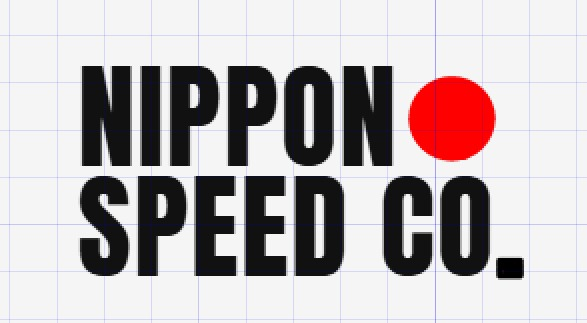

Nippon Speed Co. · kit
O bloco do Caio, reconstruído em tipografia viva (Anton, a fonte que a LP e os posts já usam). Nada aqui é imagem: é texto e duas formas. A gramática é círculo vermelho contra quadrado preto, o Japão contra o xadrez.
Medido na arte original: tinta #111111 (que já é o --ink do design system), disco #fe0000, altura de letra 100px com 10px entre as linhas.
Conferência
À esquerda a arte do Caio. À direita a mesma coisa em Anton, e por cima dela, em ciano translúcido, a reconstrução sobreposta ao original: se os traços coincidem, a fonte é a mesma.

Primária
Duas linhas fechando na mesma largura. O disco preenche a medida que sobrava depois de NIPPON, e o quadrado fecha o CO. Use grande: capa, hero, assinatura, camiseta.
Papel · tinta · mono 1 cor (a da direita é a que vai pro bordado e pro carimbo: o disco vira tinta).
Secundária
Para onde o bloco é alto demais: barra de navegação, rodapé, a assinatura no topo dos posts e dos stories. O disco vira o separador, exatamente como na opção E.
O sinal
O bloco inteiro não sobrevive a 32px (cada letra de SPEED CO. ficaria com menos de 3px). Aqui estão os três candidatos, nos tamanhos reais em que vão ser vistos. Olhe a coluna de 32px: é ela que decide.
As duas formas da logo, sozinhas. Não tem letra pra borrar: lê em qualquer tamanho. O risco é ser abstrato demais sem o nome do lado.
O bloco reduzido ao núcleo: mesma estrutura de duas linhas, mesmo disco vermelho. É a redução mais fiel à primária.
Inicial e disco. O mais legível de todos, e o menos ownable: um N sozinho é de qualquer um.
Decisão pendente
A tinta do Caio já bate com a do site (#111111). O vermelho não: o disco dele é puro (#fe0000), e o site usa um vermelho mais fechado (#c82a2a). Rodar os dois faz a marca parecer duas marcas.
Puro · hinomaru · o do site. Minha leitura: o #e60000 segura o impacto do disco sem berrar como o puro, e é o vermelho que o próprio Caio já tinha usado na primeira logo.